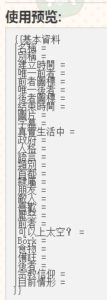
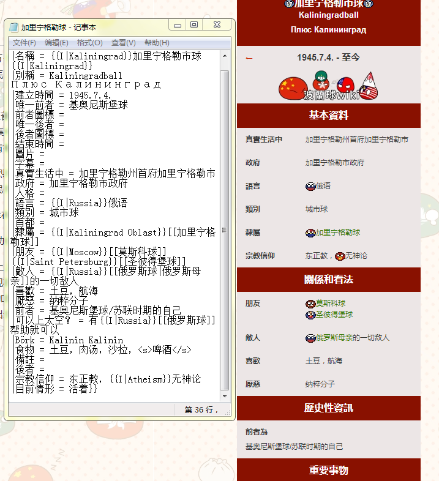

1.2.1:开始编辑-基本资料
这一篇我尽量开门见山并且可以让各位了解，对于有一些疑问，请询问群内各位有经验的人士。
我们上一篇已经陈述了编辑前需要的所有准备:保存了模板的记事本、浏览器。
那么，如何编辑基本信息模板呢？
其实比较聪明的第一眼就看出来了，毕竟作为母语所有人应该都知道，等号后面都是直接填入应有的信息

但是有一些人偶尔没有那么聪明，不知道怎么做。比如连名字都不敢确定，我们简单对比已经保存的页面和它的源代码，其实很容易发现的是这些都是一一对应的。所以一个一个编辑就可以了
